Salle de pause et salle d'attente à l'ADESS BREST
2019/ Stage de 4 mois en tant que designer en totale autonomie.
Conception et fabrication de mobiliers pour réamenager
les lieux conviviaux de l'ADESS de Brest, dans une logique
d'upcycling et derespect des habitudes de chaques usagers.
Une salle de pause pour partager des instants légers, et une salle d'attente
agréable où l'on peut facilement s'informer.
Créations de supports de communication tout au long du projets
pour recueillir les envies et les commentaires des usagers.
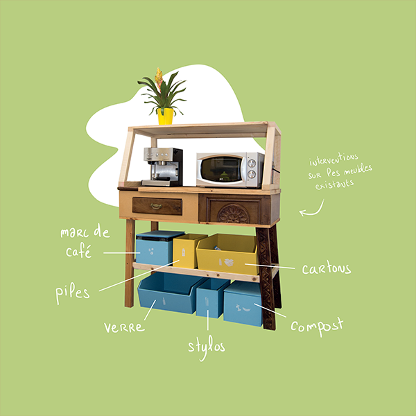
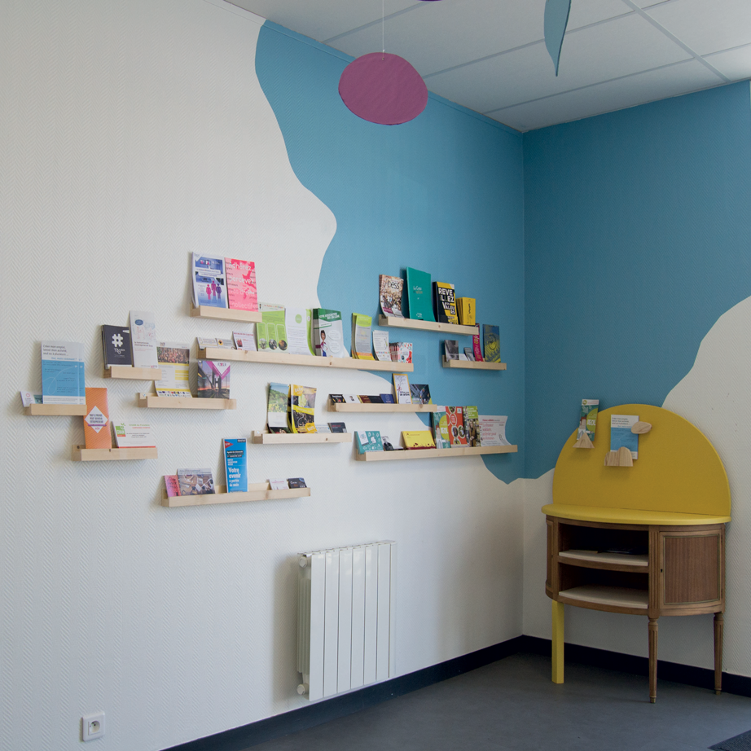
 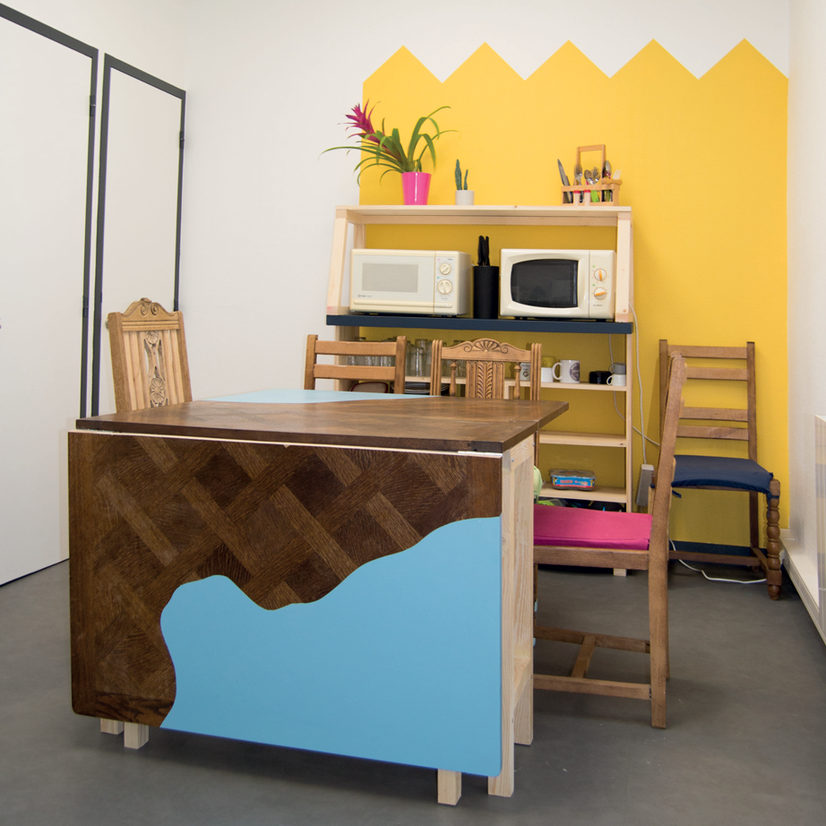
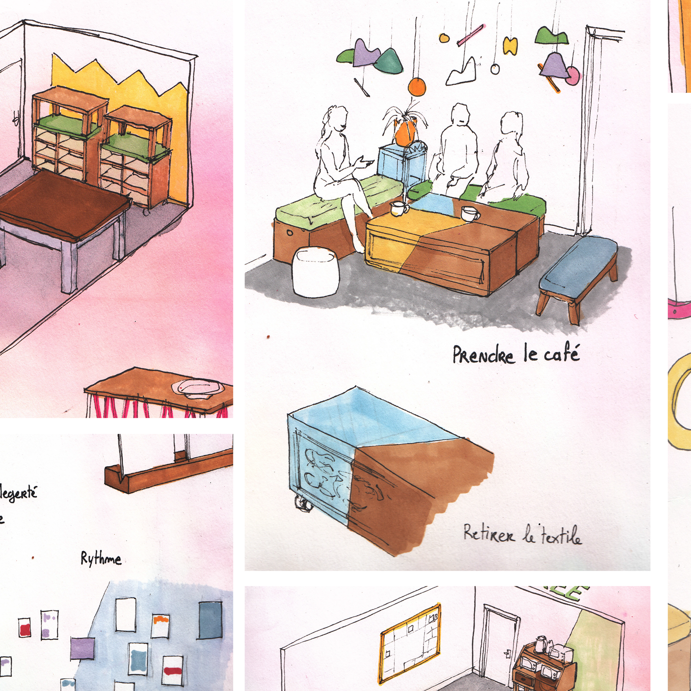
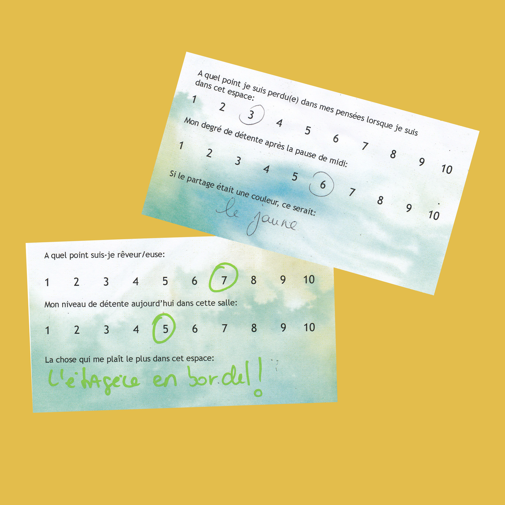
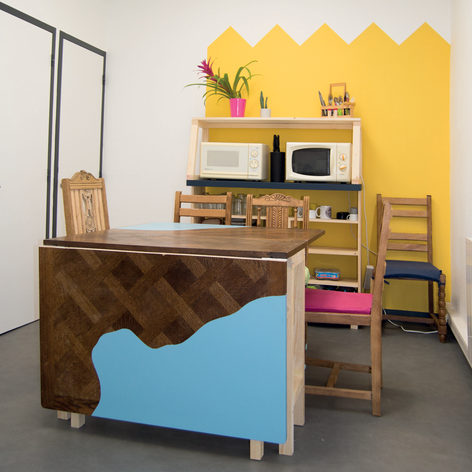
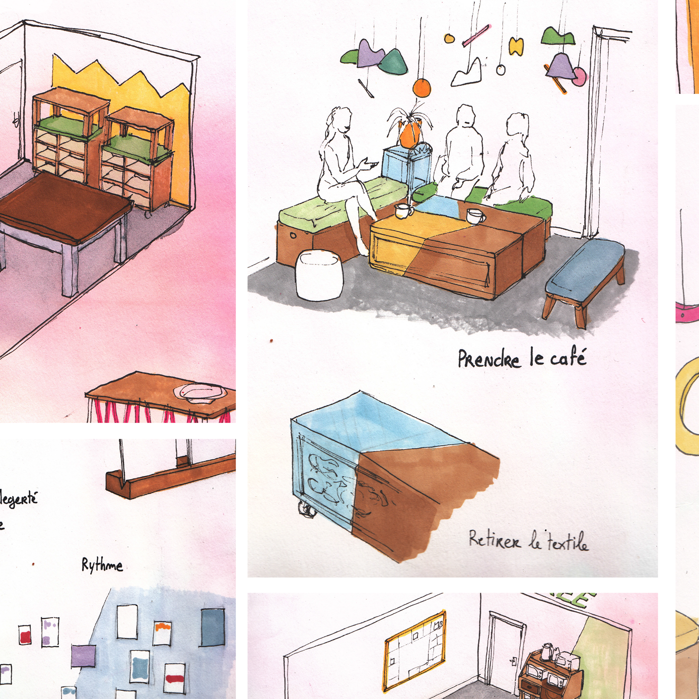
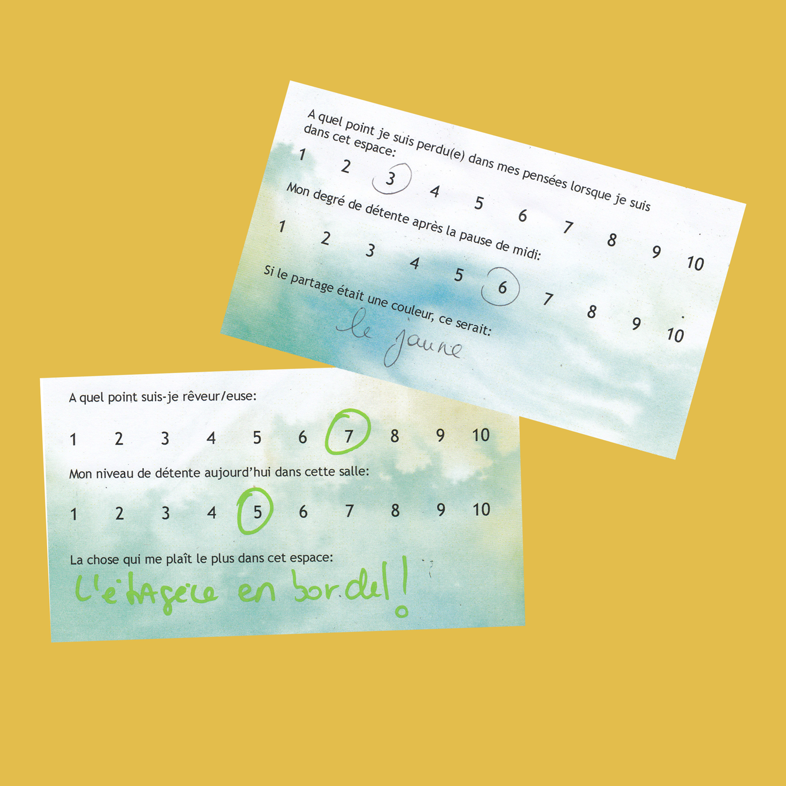
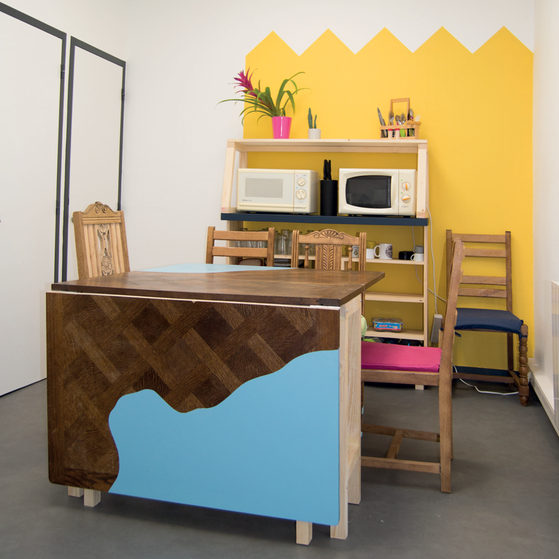
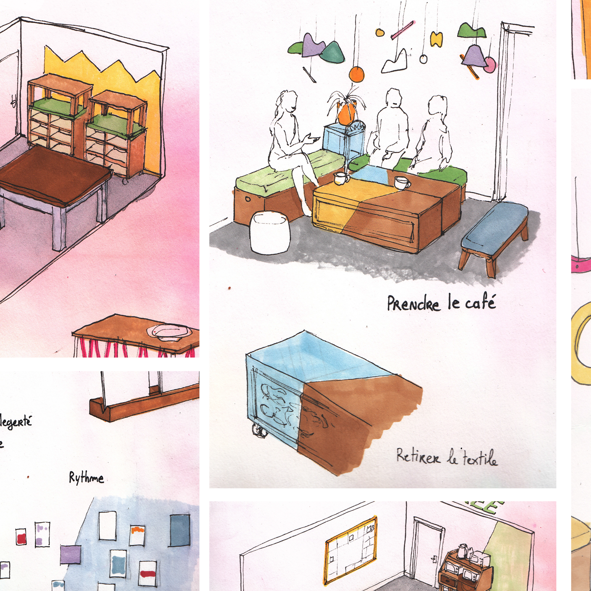
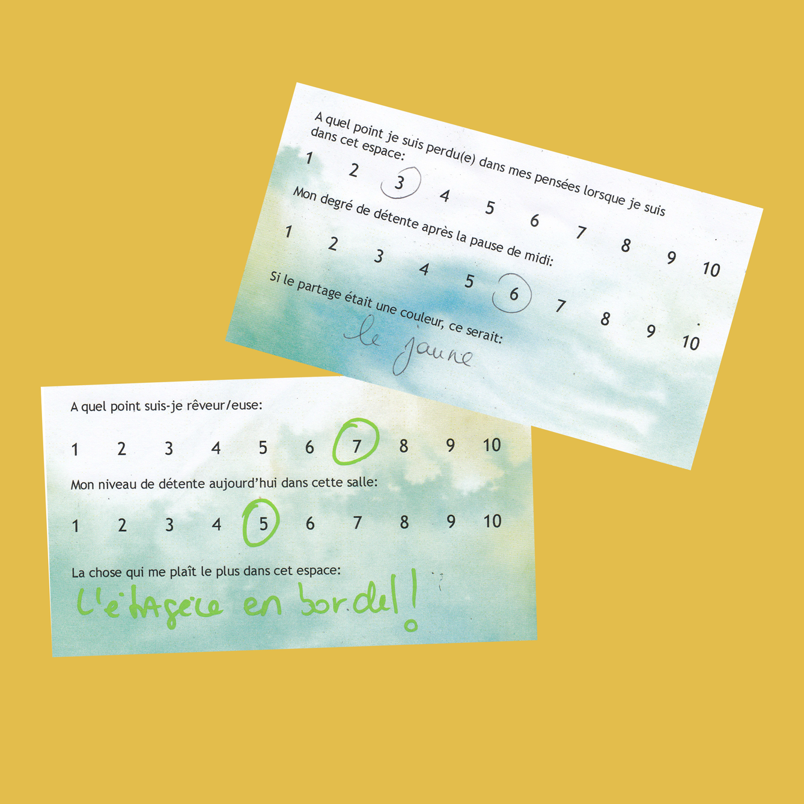